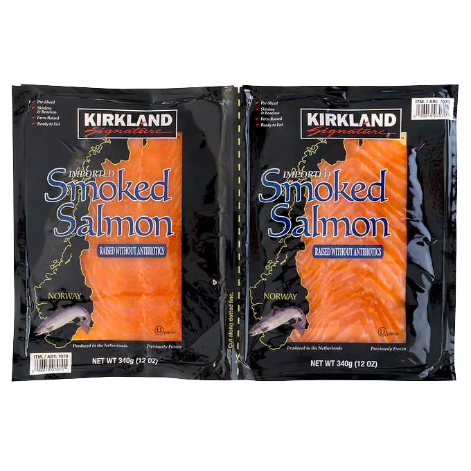

Homemade Sushi
Recipe Link
Ingredients
- 6 sheets of aka nori
- 1 batch of prepared sushi rice
- 1/2lb sashimi-grade salmon(or other fish)
- 4 oz cream cheese sliced into strips
- 1 avocado
- soy sauce
Instructions
- Place the seaweed on a bamboo mat, then cover the sheet of seaweed with an even layer of prepared sushi rice. Smooth gently with a rice paddle.
- Layer salmon, cream cheese, and avocado on the rice, and roll it up tightly. Slice with a sharp knife, and enjoy right away with soy sauce.
Internet Image:

Local Image:
